Практичний досвід · журнал «ДентАрт» 2020 №4
Мостоподібний протез із власного зуба, армований волоконною стрічкою, за один сеанс
Single Visit Natural Tooth Pontic Bridge with Fiber Reinforcement Ribbon
Раптова втрата зуба в естетично значущій зоні передніх зубів може відбуватися внаслідок травми, захворювань пародонта чи ендодонтичних помилок. Якщо зуб інтактний, його легше використати як проміжну частину адгезивного мостоподібного протеза і зафіксувати до опорних зубів за допомогою волоконної стрічки та композитного матеріалу. У випадку, коли неможливо використати власний зуб, можна використовувати пластмасові гарнітурні зуби чи відновити місце дефекту композитом у прямій техніці.
У минулому в літературі з реставраційної стоматології зустрічалося багато способів вирішення проблеми розколотих зубів і заміщення дефекту природним зубом, гарнітурним зубом або композитним матеріалом. Проміжна частина була з’єднана із сусідніми зубами за допомогою композитного матеріалу, дроту, металевої сітки, нейлону і литих металевих каркасів, з’єднаних за допомогою адгезивної техніки.1-6 Усім перерахованим способам притаманний недолік — нездатність матеріалу, з якого виготовлені конструкції, хімічно склеюватися з композитом. Відсоток клінічних невдач цих конструкцій був дуже високий тому, що ці матеріали не могли витримувати циклічні навантаження на мостоподібний протез під час фізіологічного жувального навантаження і парафункції. Інша проблема полягала в необхідності нанесення дуже товстого шару композиту на розташовані нижче дроти або сітки, щоб уникнути відколів матеріалу.7,8 Така масивність реставрації ускладнювала підтримання нормальної гігієни конструкції і ротової порожнини, що проявлялося у збільшеній ретенції їжі і зубної бляшки.
Проблема, що полягала у фіксації тонкого, але міцного адгезивного композитного мостоподібного протеза, що виготовляється за одне відвідування, була вирішена при появі високоміцних поліетиленових адгезивних, біосумісних і естетичних, легких у роботі волоконних стрічок, які здатні вбудовуватися у структуру композиту. Автор використовує один і той самий бренд волоконних стрічок, Ribbond Reinforcement Ribbon, протягом 13 років з великим успіхом.
Ribbond — це склеювана поліетиленова плетена армувальна стрічка, волокна якої спрямовані в різні боки для склеювання з композитним матеріалом. Помічено, що особлива орієнтація волокон у стрічці — за типом закритого стібка, яка використовується у Ribbond і Ribbond THM, полегшує стоматологові всі маніпуляції зі стрічкою, у порівнянні з іншими волоконними матеріалами. Також дослідження засвідчило, що зміцнення конструкції за допомогою волокон Ribbond забезпечує збільшення межі міцності на вигин і модуля пружності при вигині, що запобігає розтріскуванню композиту.9-11
Karbhari і Strassler протестували велику кількість матеріалів, посилених волокном. Вони дійшли висновку, що важливою є архітектоніка волокон, не тільки для отримання високих міцнісних якостей, але й для забезпечення стійкості до сумарних навантажень і поглинання енергії. Відмінності у плетінні й архітектоніці можуть привести до істотних відмінностей і різного функціонування, правильний вибір зможе зменшити ймовірність невдачі лікування.
У дослідженні подано докладні характеристики міцності матеріалів, які будуть корисні при виборі типу волокна для армування в залежності від конкретної ситуації.11 На основі віддалених клінічних результатів шинування з використанням оригінальної армувальної стрічки Ribbond, включаючи мостоподібні протези, виготовлені за одне відвідування, доведено, що протягом періоду 42-96 місяців (у середньому 68,6 місяця) армовані волокном композитні конструкції виявилися вельми успішними.12 У літературі описано також інші успішні клінічні випадки, де застосовувалося армування волоконною стрічкою, зокрема шинування зубів при захворюваннях пародонта,13,14 відновлення ендодонтично лікованого зуба15,16 і поперечне шинування зубів з великими композитними реставраціями.17
При виборі армувальної волоконної стрічки для виготовлення мостоподібного протеза за допомогою природного зуба за одне відвідування Ribbond пропонує не тільки чудове армування композиту, але також простоту використання і широкий асортимент волокон для різних клінічних ситуацій. Унікальне запатентоване волокнисте плетіння Ribbond надає армування композиту в різних напрямках.11,18
Клінічний випадок
48-річна жінка потрапила в клініку для участі в клінічному дослідженні захворювань пародонта. За програмою дослідження всі зуби з безнадійним прогнозом будуть видалені. Пацієнтка висловлювала основні скарги на біль у передньому зубі. Зуб дуже рухливий (рухливість 3 ступеня), чутливий до перкусії та пальпації.
Глибина зондування на вестибуло-дистальній і язично-дистальній поверхні становила 8 мм. Було зроблено рентгенограми, які показали серйозну втрату кісткової тканини (фото 1). Діагноз: пародонтит тяжкого ступеня і пародонтальний абсцес у зоні центрального різця (фото 2). Було вирішено видалити різець. Пацієнтка сказала нам, що у неї важлива сімейна подія, і запитала, чи можна якось закрити дефект після видалення зуба. Було вирішено видалити зуб і виготовити з нього армований волоконною стрічкою мостоподібний протез за одне відвідування.
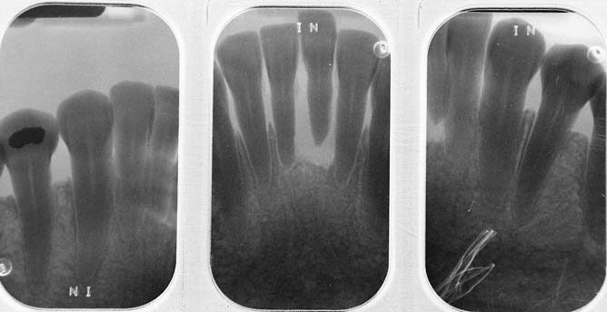
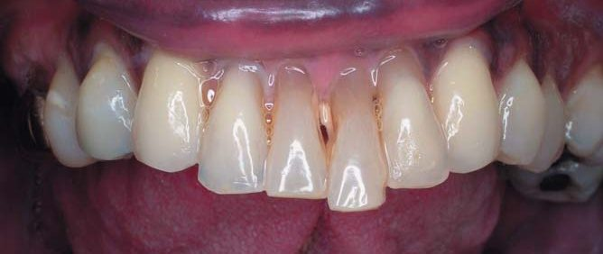
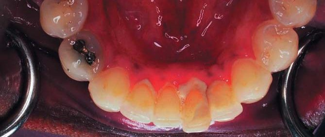
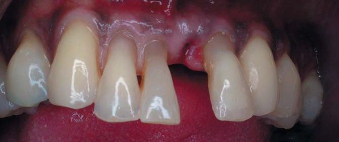
Зуб видалили, лунку зуба притискали марлевим тампоном протягом 30 хвилин для зупинки кровотечі. Перед ізоляцією рабердамом визначали необхідну довжину видаленого зуба, який буде використаний як проміжна частина мостоподібного протеза, точки вимірювання: від ріжучого краю центрального різця до лунки видаленого зуба (фото 3). Зуб свідомо був зроблений трохи довшим, щоб проміжна частина конструкції торкалася ясен після загоєння місця видалення. Видалений зуб було виміряно пародонтальним зондом до потрібної довжини. Корінь відділений від коронкової частини бором 556 (SS White Burs), а потім коронці зуба була надана потрібна форма за допомогою фінішного полум’яподібного бору (SS White Burs). Просвіт кореневого каналу заповнений композитним матеріалом, прилегла до ясен частина згладжена і заокруглена. Для продовження довговічності мостоподібного протеза на язичній поверхні сусідніх зубів вирізана канавка шириною 3-4 мм (фото 4). Ширина канавок відповідала ширині армувальної стрічки Ribbond THM, яка використана для з’єднання зуба із сусідніми зубами. Було накладено рабердам. У хустці рабердаму не було перфоровано отвір для видаленого зуба, щоб кровотеча з лунки не контамінувала робоче поле під час реставрації (фото 5).
Вестибулярну та оральну поверхні зубів очистили за допомогою чашки для профілактичної гігієни безфтористою абразивною пастою. Після того, як зуби були ретельно вимиті і висушені, міжзубні і контактні поверхні зубів очистили і обробили фінішною штрипсою середньої зернистості (Soflex Gapped Finishing Strips, 3M-ESPE). Щоб мінімізувати товщину мостоподібного протеза в естетично значущих проксимальних ділянках з вестибулярної поверхні, за допомогою високошвидкісного наконечника з водяним охолодженням тонким алмазним бором (SS White Burs) було зроблено канавки в інтерпроксимальних зонах (фото 6). Мезіолінгвальна поверхня лівого бокового різця і мезіолінгвальна поверхня правого центрального різця відпрепаровані по класу III для подальшого встановлення ретенційних елементів мостоподібного протеза і створення простору для двох шарів волоконної армувальної стрічки (фото 7). Подвійний шар волоконної стрічки з композитним матеріалом, вміщеним між обома стрічками, забезпечує додаткову міцність і стабільність мостоподібної конструкції за рахунок створення багатошарової композитної балки.18
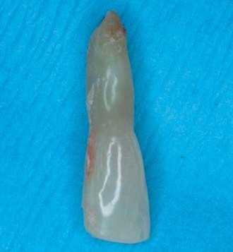
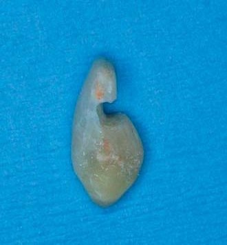
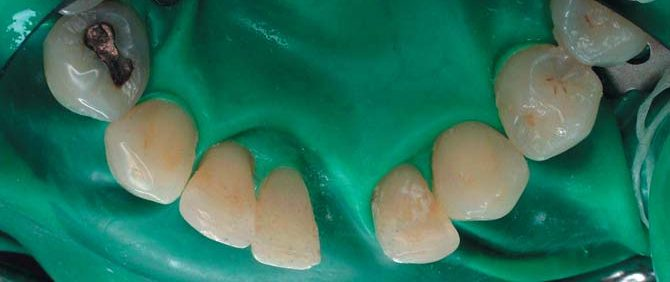
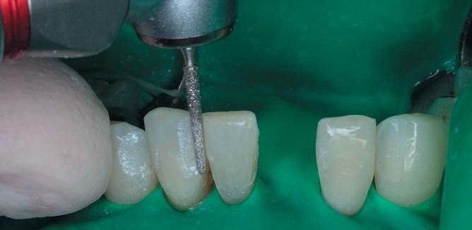
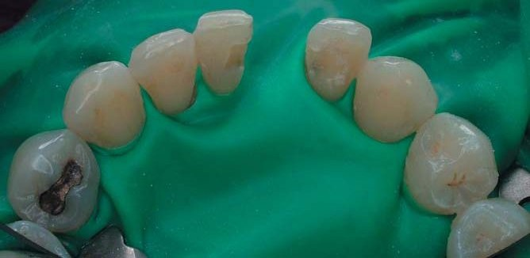
Ґрунтуючись на результатах досліджень, що демонструють чудові фізичні властивості при інтеграції в композитні матеріали, було обрано армувальну стрічку Ribbond THM для конструкції мостоподібного протеза з використанням природного зуба10,11 і клінічного успіху цієї техніки.12 Оскільки всі інші різці нижньої щелепи були рухливі внаслідок захворювання пародонта, було вирішено об’єднати всі нижні різці в шину з волоконної стрічки від ікла до ікла. Щоб виміряти необхідну довжину волоконної стрічки, шматочок зубної нитки розміщували на вестибулярній поверхні зубів від мезіальної поверхні лівого ікла нижньої щелепи до мезіальної поверхні правого ікла нижньої щелепи (фото 8).
Оброблені плазмою поліетиленові волокна чутливі до поверхневого забруднення. Тому для всіх маніпуляцій з Ribbond волокном використовувався чистий пінцет. Використовуючи флос як шаблон, шматок волокна Ribbond THM шириною 3 мм витягли з упаковки за допомогою чистого пінцета і відрізали до однакової довжини за допомогою ножиць Ribbond (фото 9). Важливо використовувати ножиці, які йдуть у комплекті з Ribbond, тому що інші не зможуть забезпечити чистий розріз жорстких поліетиленових волокон Ribbond THM.
Також був вирізаний ще один фрагмент Ribbond THM довжиною від мезіальної поверхні правого центрального різця до мезіальної поверхні лівого різця нижньої щелепи. Менший фрагмент буде спочатку поміщений у відпрепаровані порожнини, щоб зміцнити мостоподібний протез у місці з’єднання із сусідніми зубами. Після відрізання по довжині обох волоконних стрічок їх змочували бондом (SingleBond, 3M-ESPE). Для випаровування розчинника з адгезивної смоли стрічку продували повітрям протягом 10 с. Після нанесення адгезиву волоконні стрічки промокали паперовою серветкою для видалення його надлишків. Після змочування адгезивом з Ribbond можна поводитися, як з будь-яким іншим полімерним матеріалом. Стрічку відклали і накрили, щоб уникнути потрапляння світла, доки вона не буде готова до накладання на зуби. Зуб пацієнтки, який використовували для мостоподібного протеза, обробили протравлювальним гелем на основі фосфорної кислоти протягом 15 с, промили водою і висушили. Адгезив SingleBond наносився на раніше протравлені поверхні і на підготовлену борозну зуба з язичної поверхні. Його також відклали, доки не настав час його використання.
Опорні зуби мостоподібного протеза протравлювали протягом 30 с 32 % гелем фосфорної кислоти, нанесеним як на язичну, так і на вестибулярну поверхні (фото 10). Потім зуби промивали струменем повітря і води протягом 10 с і помірно висушували. Адгезив SingleBond наносили на протравлену поверхню емалі, на відпрепаровані ділянки зубів і проксимальні поверхні за допомогою одноразового пензлика. Мікрогібридний композит середньої в’язкості в унідозах (Prisma TPH3, Dentsply/Caulk) наносили на вестибулярні поверхні лівого бокового різця і правого центрального різця нижньої щелепи. Проміжну частину мостоподібного протеза взяли пінцетом і розмістили в ту зону, звідки її витягли, так, щоб коренева частина продавлювала рабердам, а ріжучий край перебував на рівні сусіднього центрального різця (фото 11). Матеріал був полімеризований з вестибулярної поверхні протягом 20 с (фото 12).
Порожнини опорних зубів відпрепаровано по класу III, і також зроблено пропил у зубі, який використовувався для відновлення проміжної частини мостоподібного протеза; важливо, щоб борозна і відпрепаровані порожнини класу III перебували на одному рівні. Зроблено повторне протравлювання поверхні. Решту зубів протравлювали гелем на основі фосфорної кислоти протягом 30 с, промивали струменем повітря і води, потім висушували. Інтерпроксимальні матричні смужки розміщували на дистальних поверхнях іклів нижньої щелепи для того, щоб не склеїти міжзубні проміжки. Раніше для мінімізації надлишків композиту в зоні міжзубних проміжків встановлювали клини. З клинами завжди є ймовірність того, що дуже рухливі зуби можуть бути зафіксовані в різних позиціях. Нещодавно був описаний новий метод мінімізації надлишків композиту на цих ділянках.19 Методика полягає у внесенні полісилоксанового відтискного матеріалу середньої або високої в’язкості за допомогою шприца для зняття відбитків в зони міжзубних амбразур. Важливо, щоб відтискний матеріал вносили після протравлювання, промивання та висушування зубів, щоб уникнути скупчення вологи, яке може статися, якщо техніка буде виконана раніше. Використання еластомірного відтискного матеріалу забезпечує пасивну ізоляцію. Для цього випадку швидкозатверджуваний полівінілсилоксановий відтискний матеріал середньої щільності (ExaMix, GC Dental) було введено шприцом у ясенні амбразури (фото 13). На решту міжзубних поверхонь з вестибулярного боку наклали композит, розподілили його і полімеризували протягом 20 с (фото 14). Композит з вестибулярного боку служить для герметизації міжзубних ділянок та захисту від рецидивуючого карієсу і покриває кожен шинований зуб на 180°. Це стабілізує кожен зуб і запобігає поломці мостоподібного протеза-шини. Цей крок важливий тому, що після шинування гігієна міжзубних проміжків не може здійснюватися належним чином.
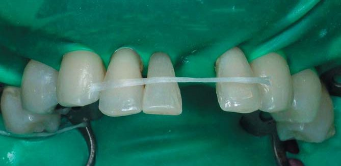
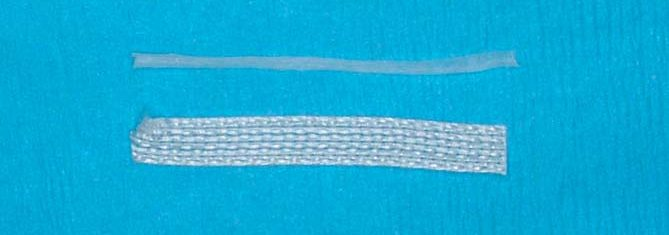
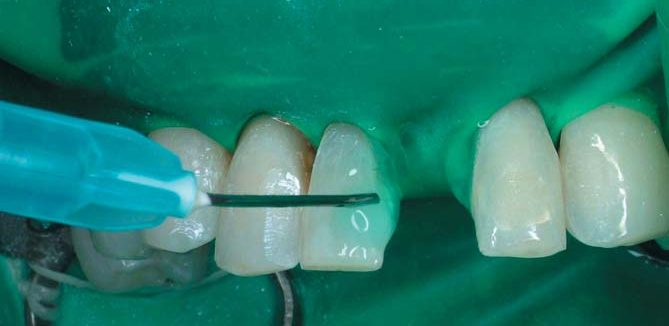
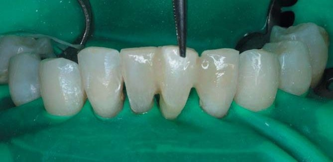
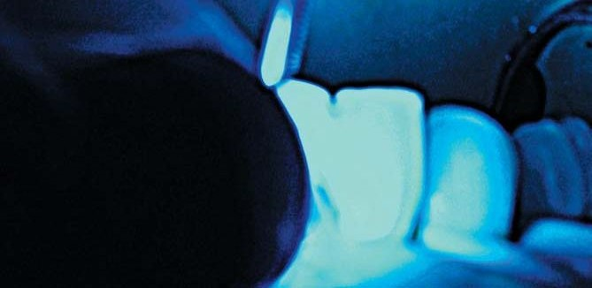
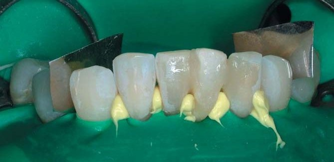
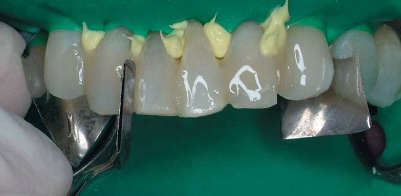
Потім композит внесли в мезіолінгвальні поверхні іклів. Позиціонувавши кінчик капсули під правильним кутом до язичних поверхонь зубів, композитний матеріал внесли в середину зубів і в язичну борозну, раніше підготовану в проміжній частині моста зуба (фото 15).
Короткий фрагмент стрічки Ribbond THM шириною 3 мм поміщений на поверхню композиту так, щоб його можна було помістити в раніше підготовлені порожнини класу III і язичну борозну зуба, що використовується як проміжна частина. Довшу волоконну стрічку розмістили з язичної поверхні від ікла до ікла так, щоб вона була посередині зуба. За допомогою пластикових і металевих штопферів стрічку Ribbond THM занурили в композит, починаючи з лівого ікла і рухаючись по дузі до правого ікла (фото 16). Працюючи в рукавичках, змочивши адгезивом палець, стрічку просунули далі в товщу композиту так, щоб стрічка повністю покрилася композитним матеріалом. Стрічку додатково адаптували з язичної і міжзубної поверхні пінцетом і штопфером. Важливо, щоб стрічка була максимально адаптована до язичної поверхні зубів (фото 17). Надлишок композиту видалено перед фотополімеризацією. Потім композитний матеріал полімеризували протягом 20 с з язичної поверхні кожного зуба, щоб переконатися в його повній полімеризації.
Як у випадку з цією пацієнткою, стрічку може бути видно і не повністю покрито достатньою товщиною композиту. Тому був застосований високоміцний зносостійкий текучий композит (Gradia Flowable, GC Dental), щоб згладити нерівності з язичної поверхні і забезпечити рівномірну товщину покриття стрічки (фото 18). Текучий композит з язичної поверхні піддали додатковій полімеризації протягом 10 с. Було видалено всі надлишки реставраційного матеріалу, поверхню композиту оброблено, відшліфовано і відполіровано з досягненням естетичного результату. Після зняття рабердаму конструкція була інтегрована в оклюзію.
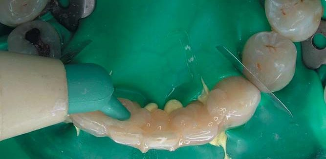
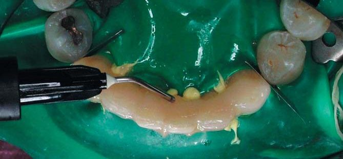
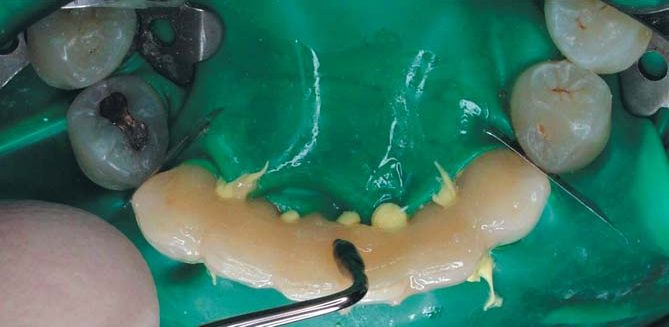

Для пацієнтки важливо, що кінцевим результатом роботи є усунення дефекту в день видалення зуба (фото 19). Ця незнімна мостоподібна конструкція, виготовлена із зуба пацієнтки, функціонувала добре через шість місяців після виготовлення (фото 20).
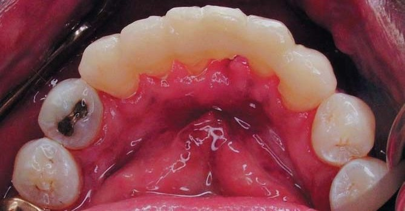
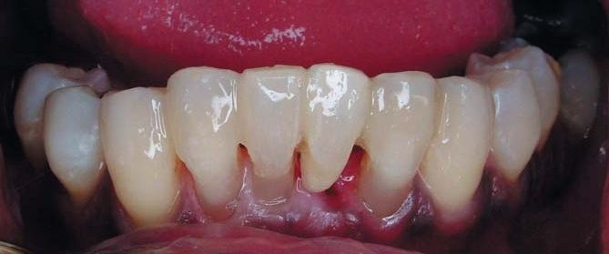
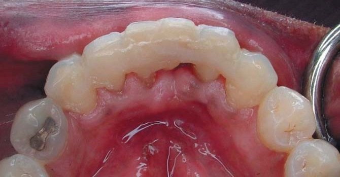
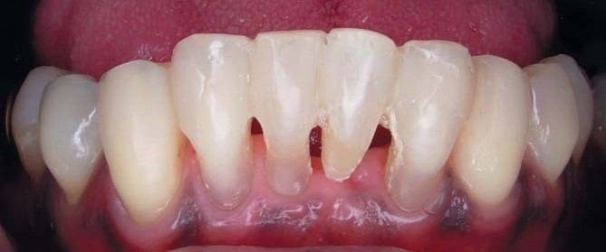
Висновки
Дослідження підтвердило гарний термін служби конструкції, виготовленої в описаній техніці. Досвід автора свідчить, що створення борозни з язичної поверхні зуба, використаного як проміжна частина мостоподібного протеза, створення порожнин класу III на опорних зубах і максимальне обволікання композитом стрічки на проксимальних поверхнях забезпечують пацієнтові тривалий строк служби цих конструкцій.
Література
- Ibsen R. L. One-appointment technique using an adhesive composite. Dental Survey. P. 20–22, February, 1973.
- Jordan R. E., Suzuki M., Sills P. S., et al. Temporary fixed partial dentures fabricated by means of an acid-etch resin technique: a report of 86 cases followed up to 3 years. J Amer Dent Assoc 96: 994–1101, 1978.
- Miller T. E., Barrick J. A. Pediatric trauma and polyethylene reinforced composite fixed partial denture replacements: a new method. J Canad Dent Assoc 59: 252–259, 1993.
- Lee G. T. R. Utilization of a natural tooth in acid-etch bridging. J Dent Child 55: 201–204, 1988.
- Livaditis G. J., Thompson V. P. Etched castings: an improved retentive mechanism for resin-bonded retainers. J Prosthet Dent. 47: 52–58, 1982.
- Breault L. G., Manga R. K. The reinforced tooth pontic. General Dent 45: 474–476, 1997.
- Strassler H. E., Haeri A., Gultz J. New generation bonded reinforcing materials for anterior periodontal tooth stabilization and splinting. Dent Clin North Am 43(1): 105–126, 1999.
- Pollack R. P. Non-crown and bridge stabilization of severely mobile, periodontally involved teeth — a 25 year perspective. Dent Clin North Am 43(1): 77–103, 1999.
- Christensen G. Reinforcement fibers for splinting teeth. In CRA Newsletter 21(10): 1, 1997.
- Strassler H. E., Karbhari V., Rudo D. Effect of fiber reinforcement on flexural strength of composite. J Dent Res (Special Issue), 80: 221 (abstract №854), 2001.
- Karbhari V. M., Strassler H. Effect of fiber architecture on flexural characteristics and fracture of fiber-reinforced composites. Dent Mater. 2006, epub Nov 7, 2006 in Press.
- Karbhari V. M., Rudo D. N., Strassler H. E. The development and clinical use of leno-woven UHMWPE ribbon in dentistry. Proceedings of the Society for Biomaterials (abstract issue), 29: 15 (abstract №529), 2003.
- Strassler H. E., Tomona N., Spitznagel J. K. Jr. Stabilizing periodontally compromised teeth with fiber-reinforced composite resin. Dent Today. 22(9): 102–109, 2003.
- Strassler H. E., Brown C. Periodontal splinting with a thin high-modulus polyethylene ribbon. Compend Contin Educ Dent. 22: 696–704, 2001.
- Newman M. P., Yaman P., Dennison J., Rafter M., Billy E. Fracture resistance of endodontically treated teeth restored with composite posts. J Prosthet Dent, 89: 360–367, 2003.
- Belli S., Erdemir A., Yildrirm C. Reinforcement effect of polyethylene fibre in root-filled teeth: comparison of two restoration techniques. Int Endod J. 39: 136–142, 2006.
- Belli S., Cobankara F. K., Eraslan O., Eskitascioglu G., Karbhari V. The effect of fiber insertion of fracture resistance of endodontically treated molars with MOD cavity and reattached fractured lingual cusps. J Biomed Mater Res B Appl Biomater 79: 35–41, 2006.
- Rudo D. N., Karbhari V. M. Physical behaviors of fiber reinforcement as applied to tooth stabilization. Dent Clin North Am. 43(1): 7–35, 1999.
- Hughes T. E., Strassler H. E. Minimizing excessive composite resin when fabricating fiber-reinforced splints. J Amer Dent Assoc, 131: 977–979, 2000.
Стаття надана Ribbond Inc., США.